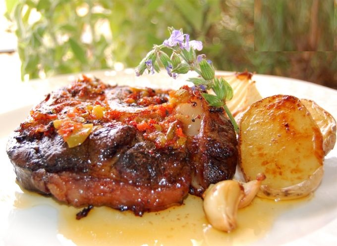

Carne al horno con papas
Ingredientes:
- 750gr de vacío, Asado, Nalga, Peceto, o el corte de su gusto
- 4 cebollas
- 1 morrón rojo
- 1kg de papas blancas o negras
- Saborizante de carne, sal, pimienta a gusto
- Caldo de verduras c/n
- Aceite
- Mostaza a gusto
Preparación:
- Pelar las papas y cortarlas en rodajas o bastones, a gusto. Blanquearlas, es decir, sumergirlas por 4 minutos en agua hirviendo y luego en agua fría para parar la cocción. Reservar.
- limpiar bien la carne, no quitarle del todo la grasa, si la tiene. huntarla con mostaza, cantidad a gusto y agregarle algo de pimienta, o, si prefiere, puede condimentarla con el caldo saborizador de carne y agregarle un poco de sal y pimienta, sin la mostaza.
- Corta la cebolla y el morrón en julianas, no tan chicas. Reservar.
- En una asadera, forrar la base con un poco de aceite, ubicar la carne en el medio y al rededore las papas. Arriba, poner las cebollas y los morrones. Agregar un poco de orégano fresco, si se tiene.
- Llevar al fuego y agregar un poco del caldo de verduras. Se debe cocinar a fuego medio controlando que no le falte líquido, pero la idea no es que flote en caldo, sino evitar que se pegue.